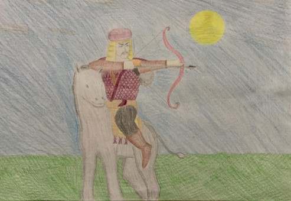

Ben Oğuz Kağan/Oğuz Han… Benim kahramanlıklarımla ülkeleri fethedişimi anlatan destanın iki versiyonu vardır. Bunlardan biri “Uygur Harfli Oğuz Kağan Destanı”, diğeri ise “Camiü’t-Tevarih (Reşidü’d-din) Oğuznamesi” olarak bilinir. İlkinde Tengri için çok savaşlar yapışım, nehirler aşışım, ülkeler fethedişim, ikincisinde ise Müslüman kimliğimle önce kendi babam ve amcalarımla olan hâkimiyet savaşlarım daha sonra da dünyanın dört bir yanına yaptığım seferlerim anlatılır. “Uygur Harfli Oğuz Kağan Destanı” daha arkaiktir ve İslam öncesine ait mitolojik ögelere fazlasıyla yer verilir. “Camiü’t-Tevarih (Reşidü’d-din) Oğuznamesi”nde bir Müslüman olarak doğarım ve dindar bir kişiliğe sahibimdir. Adıma oluşturulan destanın her iki versiyonunda da Oğuzların/Türklerin kurucu atası olarak tanıtılırım. Bütün Oğuz boylarına ad veren benimdir. “Uygur Harfli Oğuz Kağan Destanı” başından, ortasından ve sonundan eksiktir. Kâğıda mürekkeple yazıldığı için yazılar soğuğa, neme maruz kalmış, bazı sayfalar yitip gitmiştir. Bu versiyon, benim ülkeler fethettikten sonra yurduma dönüp ülkemi altı oğlum arasında paylaştırmamdan sonra tamamlanır. “Camiü’t-Tevarih (Reşidü’d-din) Oğuznamesi” ise yurduma dönüp ülkemi oğullarım arasında paylaştırmamdan sonra da devam eder. Versiyonun devamında oğullarımın ve torunlarımın tahta geçişleri ve verdikleri mücadeleler anlatılır. Her iki versiyonda da altı oğlum vardır. Bunların isimleri Gün, Ay, Yıldız, Gök, Dağ ve Deniz’dir. Gün, Ay ve Yıldız Bozokları, Gök, Dağ ve Deniz ise Üçokları oluşturur.
